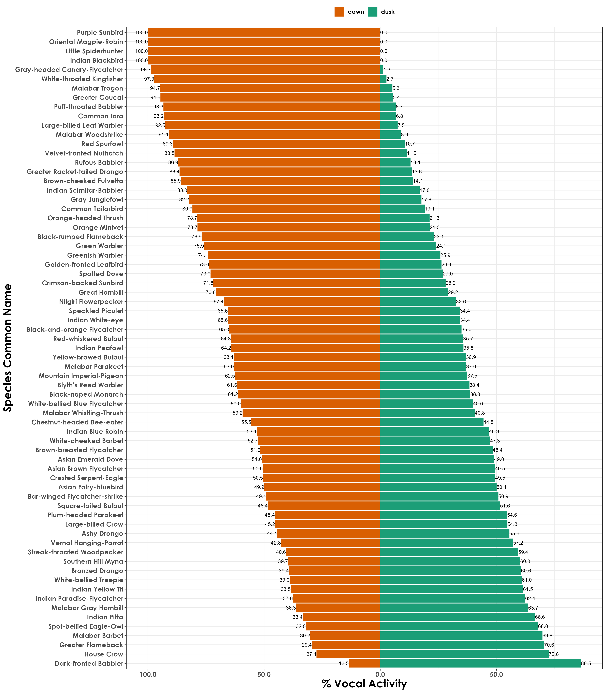
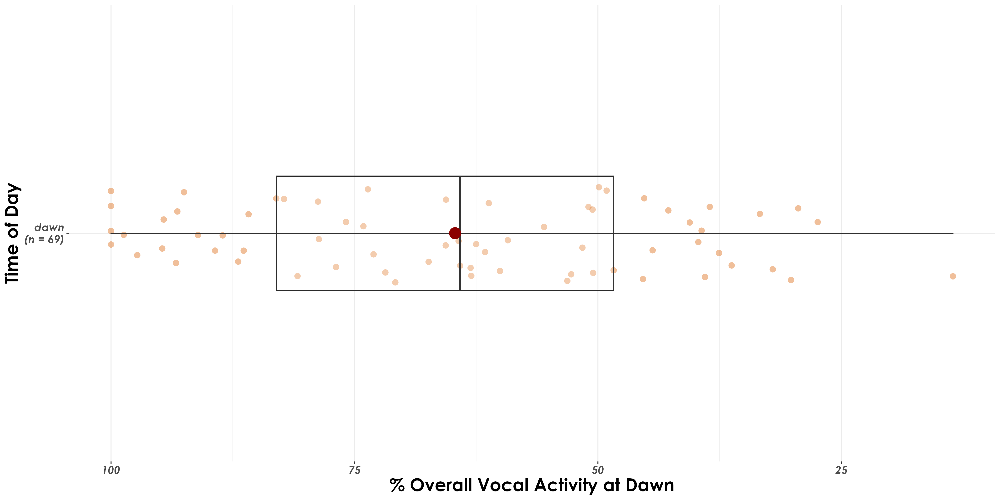

Section 3 Vocal activity
In this script, we examine differences in vocal activity between dawn and dusk for each species.
3.3 Vocal activity across time periods
A number of factors need to be considered in further analysis: accounting for time_of_day, observed_identity for example. However, we run analyses that account for differences in calling activity by species for dawn and dusk.
# sampling effort by time_of_day
effort <- acoustic_data %>%
dplyr::select(site_id, date, time_of_day) %>%
distinct() %>%
arrange(time_of_day) %>%
count(time_of_day) %>%
rename(., nVisits = n)
# Above, we note that we had sampled ~293 site-date combinations at dawn, while ~245 site-date combinations were sampled at dusk
# total number of acoustic detections summarized across every 10-s audio file
# here, we estimate % detections at dawn and dusk, while accounting for sampling effort
vocal_act <- acoustic_data %>%
group_by(time_of_day, eBird_codes) %>%
summarise(detections = sum(number)) %>%
left_join(., species_codes[,c(1,2,5)],
by = "eBird_codes") %>%
group_by(eBird_codes) %>%
mutate(total_detections =sum(detections)) %>%
mutate(percent_detections = (detections/total_detections)*100) %>%
ungroup()
## accouting for sampling effort and normalizing data
vocal_act <- vocal_act %>%
left_join(., effort, by = "time_of_day") %>%
mutate(normalized_detections = detections/nVisits) %>%
group_by(eBird_codes) %>%
mutate(total_normalized_detections = sum(normalized_detections)) %>%
mutate(percent_normalized_detections = (normalized_detections/total_normalized_detections)*100) %>%
ungroup() %>%
# in our case, we have 3 species which have 100% detections in dawn, Indian blackbird, Little spiderhunter and Purple sunbird. For these, we add a additional row specifying no detections in dusk.
add_row(time_of_day= 'dusk', eBird_codes = 'pursun4', detections = 0, scientific_name = 'Cinnyris asiaticus', common_name = 'Purple Sunbird', total_detections = 315, percent_detections = 0, normalized_detections = 0,
percent_normalized_detections = 0, nVisits = 245, total_normalized_detections = 1.075085) %>%
add_row(time_of_day= 'dusk', eBird_codes = 'eurbla2', detections = 0, scientific_name = 'Turdus simillimus', common_name = 'Indian Blackbird', total_detections = 236, percent_detections = 0,normalized_detections = 0,
percent_normalized_detections = 0, nVisits = 245,
total_normalized_detections = 0.8054608) %>%
add_row(time_of_day= 'dusk', eBird_codes = 'litspi1', detections = 0, scientific_name = 'Arachnothera longirostra', common_name = 'Little Spiderhunter', total_detections = 417, percent_detections = 0,
normalized_detections = 0, nVisits = 245,
percent_normalized_detections = 0,
total_normalized_detections = 1.423208)
# for the sake of plotting, we will create a new variable
vocal_act$plot_percent <- ifelse(vocal_act$time_of_day == "dawn",
-1*vocal_act$percent_normalized_detections,
vocal_act$percent_normalized_detections)
# figure of percent detections
fig_percent_detections <- ggplot(vocal_act, aes(
x = reorder(common_name, desc(common_name)),
y = plot_percent,
fill = time_of_day)) +
geom_text(aes(label=signif(abs(plot_percent),3)),
hjust = ifelse(vocal_act$plot_percent >= 0, 0, 1),
size = 3) +
geom_bar(stat = "identity") +
scale_fill_manual(values = c("#d95f02","#1b9e77")) +
scale_y_continuous(labels=abs) +
coord_flip() +
labs(y = '% Acoustic detections (across dawn and dusk) normalized by sampling effort)',
x = 'Common name') +
theme_bw() +
theme(text = element_text(family = "Century Gothic", size = 10, face = "bold"),plot.title = element_text(family = "Century Gothic",
size = 15, face = "bold"),
plot.subtitle = element_text(family = "Century Gothic",
size = 15, face = "bold",color="#1b2838"),
axis.title = element_text(family = "Century Gothic",
size = 15, face = "bold"))
ggsave(fig_percent_detections, filename = "figs/fig_percentDetections_species.png", width = 14, height = 16, device = png(), units = "in", dpi = 300)
dev.off()

% acoustic detections for each species between dawn and dusk
3.4 Is overall vocal activity much higher at dawn compared to dusk, across species?
fig_overall_vocal_act <- vocal_act %>%
ggbetweenstats(x = time_of_day,
y = percent_normalized_detections,
xlab = "Time of Day",
ylab = "% Acoustic Detections (normalized for sampling effort)",
pairwise.display = "significant",
package = "ggsci",
palette = "default_jco",
violin.args = list(width = 0),
ggplot.component = list(theme(text = element_text(family = "Century Gothic", size = 15, face = "bold"),plot.title = element_text(family = "Century Gothic",
size = 18, face = "bold"),
plot.subtitle = element_text(family = "Century Gothic",
size = 15, face = "bold",color="#1b2838"),
axis.title = element_text(family = "Century Gothic",
size = 15, face = "bold"))))
ggsave(fig_overall_vocal_act, filename = "figs/fig_percentDetections_overall.png", width = 14, height = 16, device = png(), units = "in", dpi = 300)
dev.off() Overall, higher vocal activity was detected at dawn compared to dusk, across species.
 ## Testing for differences in acoustic detections between dawn and dusk
Here, we see whether there are differences in the acoustic detections for each species between dawn and dusk.
stat.test <- vocal_act %>%
pairwise_wilcox_test(detections ~ time_of_day)
# We observe significant differences in acoustic detections across species between dawn and dusk
# A tibble: 1 × 9
# .y. group1 group2 n1 n2 statistic p p.adj p.adj.signif
# <chr> <chr> <chr> <int> <int> <dbl> <dbl> <dbl> <chr>
# detections dawn dusk 69 69 3192. 0.000549 0.000549 ***